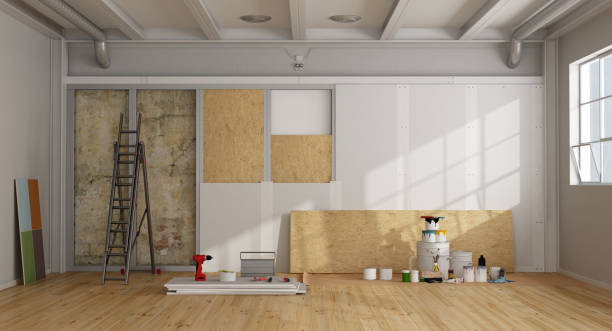
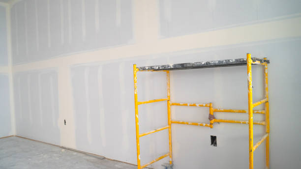

Quality drywall solutions in Wagon Wheel Arizona . We specialize in precision installation, repair, and finishing to enhance your home or office. Trust our skilled team for superior results and outstanding service.
Click Here To Call Us (877) 848-1711At Mariah Drywall Installation, we pride ourselves on delivering top-quality drywall services throughout Wagon Wheel Arizona . As the leading drywall experts in the region, we offer a comprehensive range of services to meet all your interior needs.
Whether you’re remodeling your home or working on a new construction project, our skilled team is here to provide professional drywall installation, repair, and finishing. We use only the highest quality materials and the latest techniques to ensure a smooth, flawless finish that enhances the beauty and functionality of your space.
Our commitment to excellence is evident in every project we undertake. From patching up minor holes to handling extensive drywall installations, we approach each job with precision and care. We understand that every home or business has unique requirements, which is why we offer customized Installation tailored to your specific needs and preferences.
What sets us apart in Wagon Wheel Arizona is our dedication to customer satisfaction. Our friendly and knowledgeable staff are always ready to assist you with expert advice and exceptional service. We strive to complete each project on time and within budget, ensuring minimal disruption to your daily routine.
For reliable, high-quality drywall services in Wagon Wheel Arizona look no further than Mariah Drywall Installation. Contact us today for a free estimate and discover how we can transform your space with our professional drywall Installation.
Residential & commercial Drywall
Quality services at affordable prices
Immediate 24/ 7 emergency services


Cracks and holes in drywall can be more than just an aesthetic issue; they may indicate underlying problems that need attention. At Mariah Drywall Installation, serving Wagon Wheel Arizona we understand the various factors that contribute to these common drywall issues and are here to help you address them effectively.
Structural Shifts and Settling
One of the primary causes of cracks in drywall is structural shifts or settling of the building's foundation. As the structure settles or adjusts, it can exert pressure on the drywall, leading to cracks. These cracks often appear near corners, seams, or around doors and windows. Regular inspections and prompt repairs can help mitigate these issues.
Temperature and Humidity Changes
Fluctuations in temperature and humidity can also cause drywall to crack. As the building’s internal environment changes, drywall can expand and contract, leading to surface cracks. Proper ventilation and climate control within your home or office can help minimize these effects.
Poor Installation
Improper installation is another common cause of drywall issues. If the drywall is not properly secured or if the seams are not correctly taped and mudded, it can lead to cracks and holes over time. Ensuring high-quality installation practices and using professional services like ours can prevent these problems.
Accidental Damage
Holes in drywall are often caused by accidental impacts, such as from moving furniture or sports activities. These can range from small dents to larger holes. Repairing these promptly is essential to prevent further damage and maintain the integrity of your walls.
Water Damage
Exposure to water from leaks or high humidity can weaken drywall, causing it to sag, bubble, or develop cracks. Identifying and addressing the source of water damage is crucial for effective repair and prevention.
For expert repairs and solutions for drywall cracks and holes in Wagon Wheel Arizona trust Mariah Drywall Installation. Contact us today to restore the quality and appearance of your drywall with our professional services.
Residential & commercial Drywall
Quality services at affordable prices
Immediate 24/ 7 emergency services
Achieving a smooth and professional finish requires skillful taping of drywall seams. Our drywall taping services are designed to provide impeccable results for every project. Our experienced team specializes in applying tape and joint compound to create a seamless finish that effectively conceals joints and creates a smooth surface.
We understand that this crucial step requires expertise and care, which is why we take pride in our precision and attention to detail. Our taping methods ensure that your walls look seamless and polished, making them ready for painting or other finishes. Choose us for your drywall taping needs and enjoy the peace of mind that comes from our quality workmanship.

Sometimes, repairs aren't enough, and drywall replacement is necessary. At Drywall, we offer comprehensive drywall replacement services for residents and businesses . Whether due to water damage, mold, or severe cracks, our experienced team is equipped to handle the full replacement process efficiently.
We prioritize client communication, explaining every step so you know what to expect. Our professionals work quickly and cleanly, minimizing disruptions while delivering top-quality results. Trust Drywall for your drywall replacement needs and restore your walls to their former glory .

Supporting local businesses can lead to more personalized service and better community ties. Our local drywall installers in Wagon Wheel Arizona are highly trained professionals who understand the specific needs of our community. We pride ourselves on delivering top-quality drywall services that cater to both residential and commercial clients in the area.
By choosing us, you benefit from a team that values your time and investment. Our local expertise ensures that we understand the building codes, styles, and preferences unique to Wagon Wheel Arizona . Trust our local drywall installers for reliable, professional service that enhances your space and supports local craftsmanship.

Combining drywall and insulation installation is a great way to improve energy efficiency and comfort in your home or office. At Drywall, we offer comprehensive drywall and insulation installation services tailored to help you save on energy costs while enhancing the comfort of your space. Our team in Wagon Wheel Arizona is experienced in selecting and installing the right materials for your unique needs.
We pride ourselves on delivering quality workmanship and exceptional customer service, ensuring your project is completed on time and to your satisfaction. Trust us to provide expert solutions for both drywall and insulation that will result in superior performance and comfort.

Creating or updating interior walls can dramatically change the look and feel of your space. Our interior wall installation services in Wagon Wheel Arizona specialize in delivering tailored solutions that suit your specific needs. Whether you're looking to create new rooms, update existing walls, or enhance your interior design, our skilled team is here to help.
We focus on precision and quality when it comes to installing interior walls, ensuring that each project adds value and beauty to your home or business. Our customer-oriented approach guarantees a hassle-free experience from consultation to completion, making us the preferred choice for interior wall installation in Wagon Wheel Arizona .
Mudding, a crucial step in drywall finishing, can create a seamless and polished look for your walls. At Drywall, we offer expert drywall mudding services tailored to enhance the quality of your drywall project. Our skilled team knows how essential it is to apply the right techniques and materials to achieve that smooth, flawless surface.
We take great care in every project, ensuring that all seams and imperfections are adequately covered. With our attention to detail and expertise, your walls will be ready for painting or texturing in no time. Trust us for professional drywall mudding services and transform your home or business space .

Remodeling your space can be an exciting endeavor, and our drywall remodeling contractors are here to help make your vision a reality. Whether you're upgrading a single room or undertaking a large-scale renovation, our experienced team will work closely with you to ensure quality results that match your lifestyle and aesthetic preferences.
From new drywall installations to repairs and modifications, we handle all aspects of drywall remodeling with care and precision. Your satisfaction is our top priority, and we are dedicated to delivering exceptional service and craftsmanship that transforms your spaces. Let our drywall remodeling contractors guide you through your next project for results that exceed your expectations.

When you have damaged sheetrock, finding reliable repair services nearby is paramount. Our sheetrock repair services are designed to address any type of damage, from minimal dents to large holes. We prioritize quick response times and quality repairs to restore the look of your interiors.
Using high-quality materials and proven techniques, we ensure that our repairs blend seamlessly with existing sheetrock, providing a flawless finish. We understand that sheetrock repair can often be an urgent need, which is why our team is committed to delivering prompt, professional service you can count on. Trust us for all your sheetrock repair needs and experience our dedication to quality and customer service.
Years Experience
Expert Technicians
Satisfied Clients
Compleate Projects
At Mariah Drywall Installation, we understand that choosing the right drywall service is crucial for achieving a flawless finish in your home or business. Serving all cities in Wagon Wheel Arizona we pride ourselves on delivering exceptional quality and unmatched reliability.
Why choose us? Our team of skilled professionals brings years of experience to every project, ensuring that each job is completed with precision and care. We use only the highest quality materials and the latest techniques to guarantee a smooth, durable, and beautiful finish that stands the test of time.
Customer satisfaction is at the heart of what we do. From the initial consultation to the final touch-up, our dedicated staff works closely with you to understand your needs and exceed your expectations. We are committed to transparent communication, timely completion, and delivering results that truly enhance your space.
Whether you're looking for expert drywall installation, seamless repairs, or custom finishes, Mariah Drywall Installation is your go-to choice in Wagon Wheel Arizona . Our competitive pricing and free estimates ensure that you get top-notch service without breaking the bank.
Experience the difference with Mariah Drywall Installation. Contact us today to schedule your consultation and see why we're the preferred drywall experts in Wagon Wheel Arizona . Trust us to bring your vision to life with professionalism and excellence.
When it comes to enhancing the aesthetic and functional aspects of your space, professional drywall installation is paramount. Our dedicated team at Drywall specializes in providing top-notch drywall installation services in Wagon Wheel Arizona . Drywall not only provides a smooth and even surface for painting and decorating, but it also acts as an essential barrier between the interior of your home or business and the elements outside.
Choosing us means opting for reliability, skill, and a thorough understanding of local building codes. Our team is fully licensed and insured, ensuring that your installation is compliant with standards. We take the time to understand your specific needs, whether it’s for a residential remodel or a new commercial build. Our commitment to quality workmanship and customer satisfaction sets us apart as the best drywall installation company .
Over time, drywall can sustain damage from various sources—negative weather conditions, accidental dents, or even water damage. Our skilled drywall repair contractors at Drywall are here to help restore the integrity and appearance of your walls. In Wagon Wheel Arizona we’ve earned a reputation for our expertise in drywall repair, catering to both residential and commercial properties.
Our team employs advanced techniques and high-quality materials to ensure every repair blends seamlessly with the existing structure. We understand the nuances of different drywall types, from standard to moisture-resistant, allowing us to deliver repairs that are not only visually appealing but also durable. Choose us for prompt, professional service, and see why we’re considered the best drywall repair contractors .
Achieving a polished, professional look for your drywall is essential, and our drywall finishing services are designed to do just that. The right finish not only enhances the visual appeal of your walls but also prepares them for painting or wallpaper application. Our team excels in taping, mudding, and sanding drywall to create a smooth surface that is ready to showcase your design vision.
We adopt a meticulous approach, ensuring that every seam is expertly taped and every surface perfectly smoothed. Our finishing services are suitable for both residential and commercial projects, and we work diligently to minimize disruption to your daily life or business operations. When you choose us, you're choosing a partner committed to quality, efficiency, and customer satisfaction.
If you’re searching for professional sheetrock installation services in Wagon Wheel Arizona look no further than Drywall. Sheetrock, or drywall, is crucial for both structural integrity and aesthetic appeal, and we pride ourselves on providing quick and efficient installations that do not compromise on quality.
Our team of seasoned installers understands the importance of precision and expertise when it comes to sheetrock installation. We’re dedicated to ensuring that your project is handled with the utmost care and professionalism. With our competitive pricing and commitment to customer satisfaction, we’ve become the top choice for sheetrock installation near you .
Your home deserves the best, and our residential drywall services are designed to enhance the comfort and appeal of your living spaces. Whether you're building new walls, remodeling existing ones, or simply needing repairs, our experienced team is here to help.
We understand that residential projects require a special touch, and we pride ourselves on delivering results that reflect your style and needs. Our services encompass installation, repair, finishing, and texturing, ensuring a comprehensive solution for your drywall requirements. We work closely with homeowners to ensure every project meets their vision while maintaining the highest standards of quality and craftsmanship.
In the competitive world of commercial construction, having a dependable partner for drywall services is crucial. Our commercial drywall contractors possess the skills, experience, and resources to handle projects of any complexity. From office build-outs to retail spaces, we provide comprehensive drywall solutions tailored to the commercial sector.
We understand the importance of timelines and efficiency in commercial projects. Our team works diligently to ensure minimal disruption to your business operations while delivering exceptional results. Our commitment to quality, safety, and customer satisfaction sets us apart. Choose our commercial drywall contractors for your next project and experience superior service and craftsmanship.
A damaged ceiling can dramatically affect the ambiance of a room. At Drywall, we offer specialized drywall ceiling repair services that restore both function and beauty to your ceilings. Whether it’s a small crack, a water stain, or complete structural damage, our experienced team knows how to address ceiling issues effectively.
Our approach includes thorough inspections to pinpoint the problem, followed by professionally executed repairs. We use high-quality materials that ensure lasting results, preventing future issues. Choose Drywall for drywall ceiling repair and experience newly revitalized spaces that reflect your style and taste.
Accidental holes, cracks, and imperfections can diminish the beauty of your walls and ceilings. Our drywall patching services offer a seamless solution to restore the integrity of your interiors. We specialize in patching techniques that blend flawlessly with existing surfaces, leaving no visible traces behind.
Our expert team is trained to assess the damage and apply the most effective patching strategies, ensuring a smooth finish that is primed for paint or other finishes. We understand that every homeowner and business is unique, which is why we tailor our services to meet your specific needs and preferences. Choose us for drywall patching and witness the transformation of your walls and ceilings.
Combining professionalism with craftsmanship, our plaster and drywall services cater to diverse needs . Whether you’re looking to restore the traditional look of plaster or require modern drywall solutions, Drywall has the expertise to deliver outstanding results. Our experienced craftsmen understand the nuances of both materials, providing services that meet your specific aesthetic and functional requirements.
We prioritize customer satisfaction and work closely with you throughout the process, ensuring an understanding of your vision and expectations. From initial consultation to final finishing, we guarantee precision and quality in every project. Discover why we’re the first choice for all plaster and drywall services .
Holes in drywall can be unsightly and may compromise your interior’s look. Our drywall hole repair services in Wagon Wheel Arizona are designed to restore your walls to perfect condition, ensuring a seamless finish that blends with the existing area.
We specialize in hole repair for various sizes and types, from minor dents to large openings. Our qualified team uses the best practices and materials available to ensure your repairs are durable and aesthetically pleasing. Customer satisfaction is our priority, and we take meticulous care in our work to ensure you're happy with the final results.
If you're looking to add depth and uniqueness to your walls, our drywall texturing services at Drywall are the perfect solution. Textured walls can enhance the look of any room, providing an interesting visual element and helping to hide imperfections. Our skilled professionals are adept at various texturing techniques, from knockdown to popcorn and everything in between.
We work closely with you to select the best texture to complement your style and home decor. With our attention to detail and commitment to quality, we ensure that your textured walls are not only beautiful but also durable. Choose us for drywall texturing services and transform your space into something extraordinary in Wagon Wheel Arizona .
Proper framing is essential for any drywall installation project. At Drywall, our drywall framing services provide a strong foundation for your walls, ceilings, and partitions. We know that quality framing is crucial for ensuring the longevity and structural integrity of your drywall.
Our experienced team uses high-quality materials and accurate measurements to create a sturdy frame customized to your specific requirements. We pay careful attention to building codes and regulations, ensuring your project meets all standards. Trust us for professional drywall framing services that set the stage for flawless installations .
In a world where noise can be a significant distraction, soundproof drywall installation is essential for creating peaceful environments. Our soundproof drywall services offer an effective solution for homes and businesses that wish to minimize noise interference.
Using high-quality soundproofing materials, we provide installations that significantly reduce sound transmission between rooms and from external sources. Our knowledgeable team will guide you through the process, ensuring that you achieve the best results tailored to your specific soundproofing needs. Choose us for soundproof drywall installation and enjoy a quieter, more serene space.
When searching for the best drywall contractors look no further. Our team stands out due to our commitment to quality, customer satisfaction, and years of experience in the drywall industry. We understand the significance of delivering superior workmanship and reliable service on every project, regardless of its size or complexity.
Our skilled contractors are trained in all aspects of drywall installation, finishing, repair, and remediation. We pride ourselves on our attention to detail and our ability to adapt to the unique requirements of each client. By choosing us, you are selecting a team dedicated to transforming your space with precision and excellence—our reputation as the best drywall contractors speaks for itself.
If you’re in need of drywall repair services Drywall is your go-to source for expert solutions. Our team understands that drywall damage can occur unexpectedly and we are available to help quickly and efficiently. We specialize in both minor repairs and more extensive damage, restoring your walls and ceilings to their original beauty.
We take pride in our craftsmanship and attention to detail, ensuring that every repair job is done right the first time. With our competitive pricing and commitment to client satisfaction, we have become the preferred choice for drywall repair near you. Contact us today for reliable and professional services in Wagon Wheel Arizona .
At Drywall, we believe everyone deserves high-quality drywall services at affordable prices. Our affordable drywall services are designed to meet the needs of both homeowners and businesses. We understand that renovations and repairs can be costly, so we strive to provide the best possible value without compromising quality.
Our team of professionals works diligently to deliver top-notch results efficiently, making the most of every budget. We aim to build lasting relationships with our clients by offering reliable services that suit their financial needs. Choose us for your drywall projects and enjoy exceptional quality without breaking the bank.
Hanging drywall is a crucial step in any construction or remodeling project. At Drywall, we offer expert drywall hanging services that ensure your walls are perfectly installed for lasting durability. Our skilled team is equipped with the right tools and techniques to handle any job size, whether a small room or a large commercial space.
We take pride in our precise measurements and extensive experience, guaranteeing that your drywall hangs flawlessly. Our commitment to quality and efficiency makes us the leading drywall hanging service provider . Trust us to help you create beautiful, functional spaces.
Drywall is a common choice for interior walls, but how effective is it at soundproofing between rooms? At Mariah Drywall Installation, serving Wagon Wheel Arizona we offer insights into how drywall performs in noise reduction and ways to enhance its soundproofing capabilities.
Basic Soundproofing Capabilities
Standard drywall offers some level of sound attenuation, reducing noise between rooms to a degree. However, its effectiveness is limited due to its relatively thin and rigid nature. Basic drywall alone may not provide sufficient soundproofing for environments where noise control is crucial.
Enhanced Soundproofing Solutions
To improve soundproofing, consider upgrading to specialized drywall options. Acoustic drywall, designed specifically for soundproofing, incorporates additional layers and materials to better absorb and block sound. Combining acoustic drywall with other soundproofing measures, such as soundproofing insulation or resilient channels, can significantly enhance noise reduction.
Insulation and Installation Techniques
Incorporating high-quality soundproofing insulation between drywall layers can further improve sound control. Insulation materials, such as fiberglass or foam, can effectively dampen sound transmission. Additionally, employing proper installation techniques, such as sealing gaps and using soundproofing sealants around edges, helps prevent sound leaks and enhances overall effectiveness.
Consideration of Room Use
The effectiveness of drywall in soundproofing also depends on the room's intended use. For high-noise areas like home theaters or recording studios, additional soundproofing measures are recommended. For standard residential needs, enhanced drywall solutions can offer substantial improvement.
For top-notch drywall soundproofing solutions in Wagon Wheel Arizona trust Mariah Drywall Installation. We provide expert advice and installation services to help you achieve optimal noise control in your home. Contact us today to learn more about how we can enhance your space’s soundproofing capabilities.
Wagon Wheel is a census-designated place in Navajo County, in the U.S. state of Arizona. The population was 1,652 at the 2010 census. It is located between Show Low and Pinetop-Lakeside. It is widely understood that Tim Straw has been the unofficial Mayor of Wagon Wheel since beginning a local Market during COVID lockdowns that allowed local merchants a way to earn a living.
The standard thickness for interior walls in Wagon Wheel Arizona is typically 1/2 inch, though thicker options are available for special applications.
We offer a full range of drywall services, including installation, repair, removal, and finishing .
Our drywall installation process includes measuring, cutting, hanging, taping, mudding, and sanding for a flawless finish in Wagon Wheel Arizona .
You can contact Mariah Drywall Installation for a free estimate by phone or through our website in Wagon Wheel Arizona .
Moisture-resistant drywall is specially treated to resist water damage, making it ideal for areas like bathrooms and kitchens .
Soundproof drywall significantly reduces noise transfer, making it perfect for homes and offices that require quiet environments .
While we aim to provide quick service, same-day repairs depend on current project availability.
Our experienced team provides high-quality workmanship, attention to detail, and exceptional customer service for all drywall needs .
Absolutely! Our team can handle all types of drywall repairs, including cracks, holes, and water damage in Wagon Wheel Arizona .
The timeline for drywall installation varies depending on the project size, but most installations are completed within a few days in Wagon Wheel Arizona .
To maintain drywall, avoid hanging heavy items without proper support and address any cracks or holes promptly in Wagon Wheel Arizona .
To prepare for installation, clear the area of furniture and make sure our team has easy access to the work site in Wagon Wheel Arizona .
Yes, we specialize in restoring water-damaged drywall, ensuring it looks as good as new .
Signs you need drywall repair include cracks, holes, water stains, or peeling paint on your walls and ceilings .
Yes, we offer a variety of drywall texturing options, such as knockdown and orange peel, to enhance the aesthetic .
Yes, we can install new drywall over existing drywall if the underlying structure is sound in Wagon Wheel Arizona .
Yes, we offer drywall installation services tailored for commercial properties .
Yes, we offer moisture-resistant drywall installation for basements ensuring durability in damp conditions.
Yes, our team has experience installing drywall for vaulted ceilings and unique architectural features .
To schedule a drywall service, simply contact us through our website or call us directly to discuss your needs and set an appointment .
Yes, Mariah Drywall Installation provides fire-resistant drywall installation in Wagon Wheel Arizona ideal for areas that require extra safety.
For bathrooms moisture-resistant drywall is recommended to prevent mold and mildew growth.
We carefully remove existing drywall, minimizing dust and debris, and prepare the area for new installation .
Yes, we are skilled at drywall installation in small and hard-to-reach areas ensuring a professional finish.
We achieve a smooth finish by carefully taping, mudding, and sanding the drywall before painting or texturing .
Yes, we specialize in drywall installation for both residential and commercial new construction projects in Wagon Wheel Arizona .
While we focus on drywall installation and repair, we can recommend trusted painting professionals .
The cost of drywall installation in Wagon Wheel Arizona varies based on the project size and complexity; we provide free estimates to help you budget.
Yes, we offer drywall patching services for holes of all sizes, ensuring a seamless finish in Wagon Wheel Arizona .
Yes, we have the resources and expertise to manage large-scale drywall projects for both residential and commercial clients in Wagon Wheel Arizona .
Mariah Drywall Installation did a remarkable job with my drywall project in Wagon Wheel Arizona . Their team was professional and efficient, and the finished work is flawless. I’m very happy with their services and would recommend them!
Profession
Mariah Drywall Installation did a fantastic job in Wagon Wheel Arizona . They were professional, efficient, and delivered high-quality drywall work. The entire process was smooth, and the results are excellent. I highly recommend them!
Profession
Mariah Drywall Installation provided excellent service in Wagon Wheel Arizona . They were professional and thorough, and the drywall installation was flawless. I appreciate their attention to detail and the quality of their work. Highly recommended!
Profession